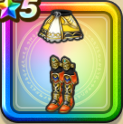

真夏のアリーナ服下
攻略班 7.0点 / 転び耐性+5%毒耐性+10%転び耐性+5%毒耐性+10%【バトマス】スキルの体技ダメージ+2%ギラ属性斬撃・体技ダメージ+4%【晴れ】ギラ属性斬撃・体技ダメージ+2%
くわしい特徴
【レベル別習得スキル】 Lv1転び耐性+5% Lv5さいだいMP+5 Lv8すばやさ+5 Lv10毒耐性+10% Lv12【バトマス】スキルの体技ダメージ+2% Lv15ギラ属性斬撃・体技ダメージ+4% Lv18転び耐性+5% Lv20【晴れ】ギラ属性斬撃・体技ダメージ+2% Lv23守備力+7 Lv25毒耐性+10% 【限界突破スキル】 1凸攻撃力+5 2凸守備力+5 3凸すばやさ+7 4凸さいだいHP+10